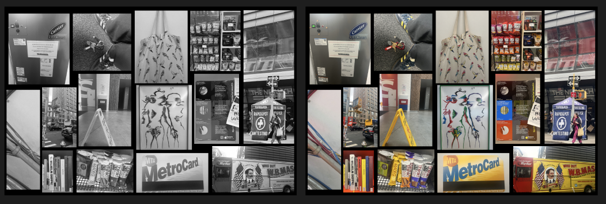
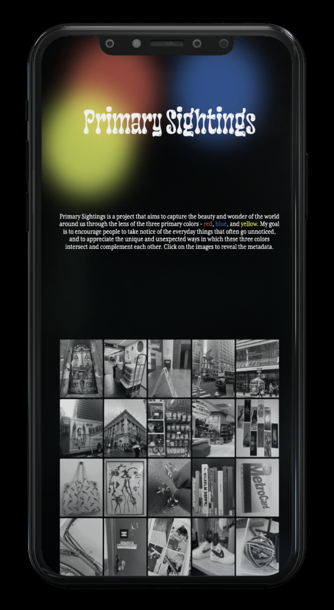

Primary Sightings is a project that aims to capture the beauty and wonder of the world around us through the lens of the three primary colors - red, blue, and yellow. My goal is to encourage people to take notice of the everyday things that often go unnoticed, and to appreciate the unique and unexpected ways in which these three colors intersect and complement each other.
PROJECT
PROCESS
Choosing my color palatte was pretty straight forward because I wanted to use the primary colors- red, blue, and yellow to be the foundation of my designs. Additonally, I decided that black and white would complement the colors well and also tie into the monochrome used in the grid.
For the display, I wanted to create something that could be easily interpreted as the primary colors and give a good insight into the project. I was confused between the woven look and the venn diagram, but it was clear that the venn diagram would be a better fit and could be better animated.

For the body, I wanted to create a monochrome grid of images, which when hovered over, would display the actual color of the images. This makes the page interactive and interesting to view because the viewer gets to spot the primary colors and almost creates a game-like feel. As seen in the final version, the grid is ordered and not randomly placed.
To showcase the metadata, I wanted to again add interaction to the page, so my initial idea was to create a popup card when the image is clicked. However, I altered it to a card flip when clicked to reveal the data. When clicked again, the card flips back to the image. Moreover, I had initially decided to have a page for all the metadata, but decided against it because I wasn't adding anything to the project.
TYPEFACE CHOICES
Groupie Gloss
I used this for the display because I really liked the playful and fun nature of this typeface, as well as it giving a creative feel. This project is light and fun, so it goes well for the display.
Mrs Eaves XL
I used this for the body because I liked that this typeface was legible and had character to it. It is simple and it compliments the data well.
INTERACTIONS
HOVER
CLICK
I liked the idea of the entire grid being monochrome, but when you hover on an image, the colors are visible. This makes it fun to play around and interact with. Subsequently, when you click on an image, the card flips and the metadata is revealed.
SCALING
MOBILE VIEW

TABLET VIEW
DESKTOP VIEW
This page was first styled on mobile and then I added media queries for different breakpoints. In addition, I used responsive units.
STRUGGLES
I strugged with using Javascript because it was something I had never learned before, which made the project far more challenging but also interesting because I got to learn a lot from individual research as well as from my peers. Further, I found it challenging to also pull in the images and make them fit in the grid because they were all different sizes. Overall, everything I expected this project to become worked successfully and I am proud that I was able to design this.